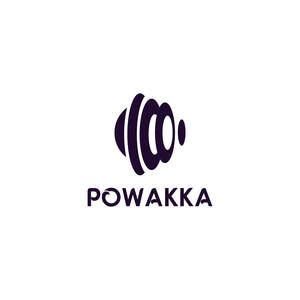

Trade Mark Journal No.2026/003 16 January 2026
UK00004317811 31 December 2025 (8,21)

- Class 8
- Razor blades; Hacksaw blades; Blades for knives; Blades for shears; Razor blade dispensers; Vibrating blade razors; Handsaw blades; Scissor blades; Manually-operated razor blade sharpeners; Blade sharpening instruments; Planing blades; Sharpening wheels for knives and blades; Vibrating blade shavers; Shear blades; Shaving blades; Safety razor blades; Blades for hand saws; Dispensers for razor blades; Saw blades; Blades for electric razors; Safety razor blades (Dispensers for -); Hacksaw blades for hand operated hacksaws; Razor knives; Blades [hand tools]; Knife sharpeners; Saw blades for use with hand-operated tools; Blades for hand-operated planes; Knife sharpeners [hand tools]; Jigsaw blades [parts for hand-operated tools]; Knife sharpeners [hand operated tools]; Razor strops; Razors; Razor cases; Electric razors; Straight razors; Disposable razors; Non-electric razors; Safety razors; Razors, electric or non-electric; Japanese razors; Hair cutting scissors; Electric shavers; Electric beard trimmers; Wick trimmers being scissors; Non-electric beard trimmers; Beard clippers; Trimming knives; Electric hair clippers; Scissors; Non-electric hair clippers; Beard Shaping Tool; Cutting tools [hand tools]; Emergency cutting tools [hand tools]; Hand-operated cutting tools.
- Class 21
- Combs; Hair combs; Eyelash combs; Combs for the hair (Large-toothed -); Large-toothed combs for the hair; Cleaning combs; Combs for back-combing hair; Curry combs; Horse combs; Electric hair combs; Combs for animals; Combs (Electric -); Electric combs; Wide tooth combs for hair; Mane brushes [horse combs]; Deshedding combs for pets; De-shedding combs for pets; Comb cases; Comb (electric); Hair for brushes; Hair brushes; Cattle hair for brushes; Shaving brushes of badger hair; Combs for use on domestic animals; Hairbrushes; Mane brushes; Horsehair for brushes; Shampoo brushes; Shaving brushes; Holders for shaving brushes; Eyelash brushes; Hair tinting brushes; Electric rotating hair brushes; Electrically heated hair brushes; Brushes; Eyebrow brushes; Tooth brushes, non-electric; Lint brushes; Pet grooming glove; Brushes for grooming horses; Animal grooming gloves; Brushes for grooming pet animals; Deshedding brushes for pets; Raccoon dog hair for brushes; Brushes for personal hygiene; Brushes for cleaning footwear; Cleaning brushes for sports equipment.
VC Online Business LLC
Representative: Victoria Watson